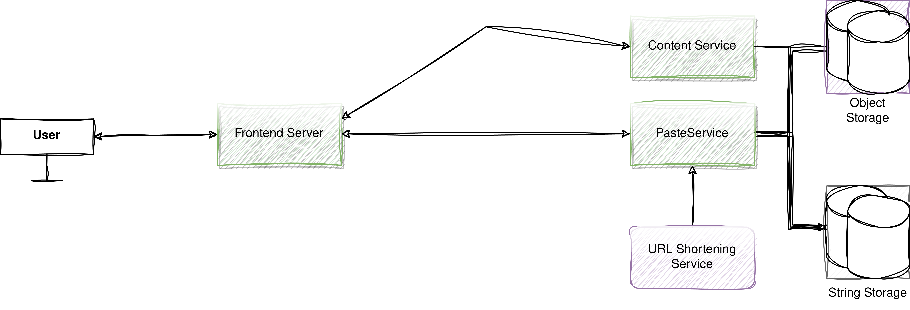
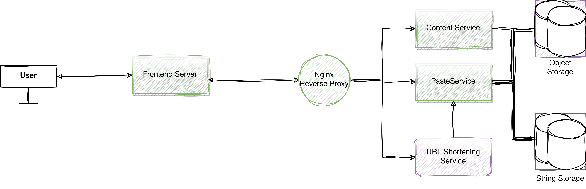
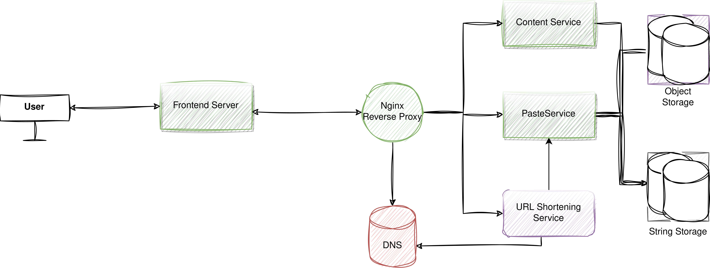
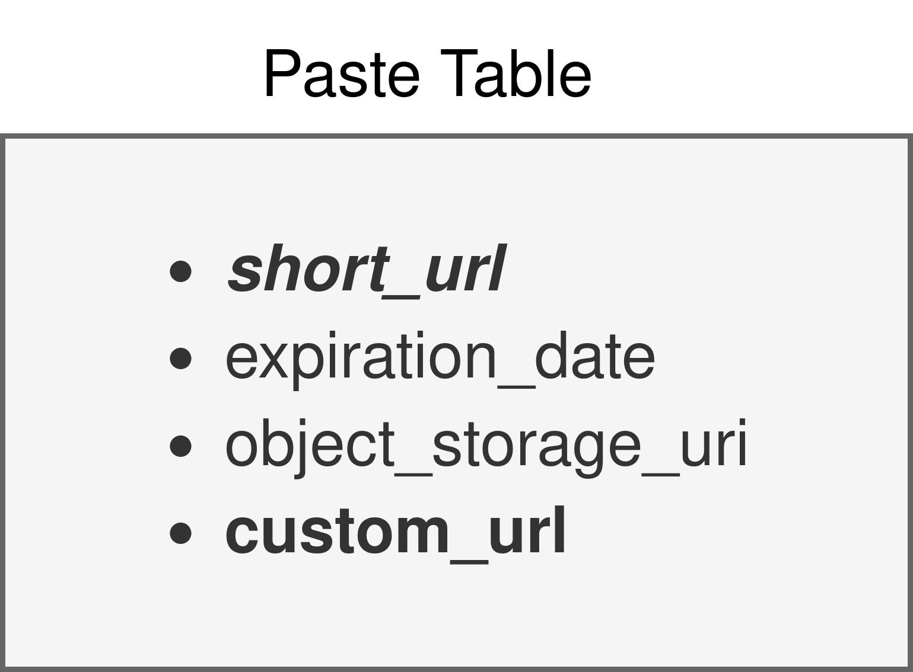
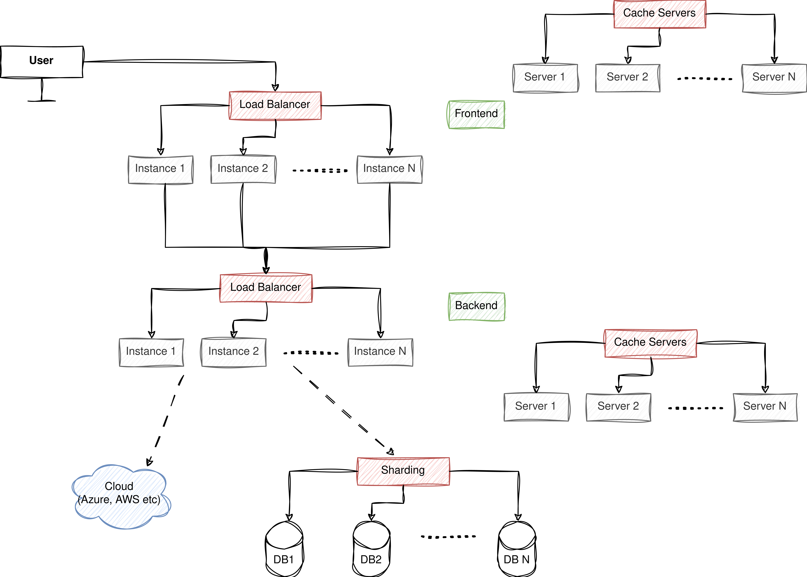

Designing A Pastebin System
Table of Contents
- 1. Requirements
- 2. Developing the Monolith
- 3. From monolith into microservice
- 4. Containerizing Mircoservices
- 5. Nginx as Reverse Proxy
- 6. Distributing Microservices
- 7. DNS or Service Discovery
- 8. Replicating Server & Updated DNS
- 9. Load Balancing
- 10. Caching
- 11. Indexing
- 12. TODO Analytics
- 13. Messaging Queues
- 14. Sharding
- 15. Scaling?
- 16. Q/A
1. Requirements
1.1. Normal Requirements
- Users should be able to paste contents (size<=50mb) and get an url for it.
- When the url pastes the url in their browser, the content corresponding to the url will be shown.
- Users can give expiration time for a url.
- Users can give custom urls.
1.2. Expected Requirements
- Exposing the service through REST APIs.
- The system should be available at demand.
- The system should be easily scalable.
1.3. Exciting Requirements
Analytics: Recording system performance to test the system against different loads and optimize it.
2. Developing the Monolith
First we will develop a simple monolith of pastebin. The backend is in nodejs and the frontend is in Angular. The following is a demo video on our v1 pastebin. demo video link
We have the following endpoints in current monolithics structure.
- POST /api/paste - POST /api/paste/expiry - GET /api/paste/content/:id - GET /api/paste/content
And the following jobs/business logic.
- Delete Expired Pastes - Generate Unique URL
2.1. Code Snippet
const express = require('express');
const mysql = require('mysql2');
const cors = require('cors');
const crypto = require('crypto');
const app = express();
const port = 3000;
const DATABASE_HOST = "localhost";
const DATABASE_USER = "abhidb";
const DATABASE_PASSWORD = "admin";
const DATABASE_NAME = "pastebin";
const db = mysql.createConnection({
host: DATABASE_HOST,
user: DATABASE_USER,
password: DATABASE_PASSWORD,
database: DATABASE_NAME
});
db.connect((err) => {
if (err) {
console.error('Error connecting to the database: ' + err.stack);
return;
}
console.log('Connected to the database as id ' + db.threadId);
});
app.use(express.json());
app.use(cors());
// Create a new paste
const minioClient = new Minio.Client({
endPoint: 'minio',
port: 9000,
useSSL: false,
accessKey: 'wBl9YHNf6XXfdMbWu0MS',
secretKey: 'fpmlcbSbmge864KjPCwLn3WJ6PvQzblhqPCs8zaM',
});
app.post('/api/v1/paste', async (req, res) => {
const content = req.body.content;
const filePath = req.file.path;
const expire_at = new Date(Date.now() + 24 * 60 * 60 * 1000); // 24 hours
const metaData = {
'Content-Type': req.file.mimetype,
};
const bucketName = 'pasteContents';
const objectName = req.file.originalname;
await minioClient.fPutObject(bucketName, objectName, filePath, metaData);
const serverUrl = 'localhost:9000';
const objectURL = `${serverUrl}/${bucketName}/${objectName}`;
const URL = generateUniqueURL(objectURL);
db.query(
'INSERT INTO pastes (minioURL, expire_at, URL) VALUES (?, ?, ?)',
[objectURL, expire_at, URL],
(err, results) => {
if (err) {
console.error('Error creating a paste: ' + err);
res.status(500).json({ error: 'Internal server error' });
return;
}
res.status(201).json({ id: results.insertId, url: URL });
});
});
// Create a new paste with expiry date
app.post('/api/paste/expiry', (req, res) => {
const content = req.body.content;
const expire_after_seconds = req.body.expiry; // In seconds
const expire_at = new Date(Date.now() + expire_after_seconds * 1000); // 24 hours
const URL = generateUniqueURL(content);
db.query(
'INSERT INTO pastes (content, expire_at, URL) VALUES (?, ?, ?)',
[content, expire_at, URL],
(err, results) => {
if (err) {
console.error('Error creating a paste: ' + err);
res.status(500).json({ error: 'Internal server error' });
return;
}
res.status(201).json({ id: results.insertId, url: URL });
}
);
});
// Retrieve a paste by ID
app.get('/api/paste/content/:id', (req, res) => {
const id = req.params.id;
db.query('SELECT objectURL FROM pastes WHERE id = ?', [id], (err, results) => {
if (err) {
console.error('Error retrieving paste: ' + err);
res.status(500).json({ error: 'Internal server error' });
return;
}
if (results.length === 0) {
res.status(404).json({ error: 'Paste not found' });
return;
}
res.status(200).send({"content": results[0].content});
});
});
// Create a GET endpoint for retrieving content by URL
app.get('/api/paste/content', (req, res) => {
const URL = req.query.url;
console.log(`DEBUG: ${URL}`);
if (!URL) {
return res.status(400).json({ error: 'URL parameter is missing' });
}
// Assuming you have a database table named 'pastes' with columns 'id' and 'content'
db.query('SELECT content FROM pastes WHERE URL = ?', [URL], (err, results) => {
if (err) {
console.error('Error retrieving content: ' + err);
res.status(500).json({ error: 'Internal server error' });
return;
}
if (results.length === 0) {
res.status(404).json({ error: 'Paste not found' });
return;
}
res.status(200).send(results[0].content);
});
});
// Job to delete old pastes
function deleteExpiredPastes() {
const now = new Date();
db.query('DELETE FROM pastes WHERE expire_at <= ?', [now], (err, results) => {
if (err) {
console.error('Error deleting expired pastes: ' + err);
return;
}
console.log(`Deleted ${results.affectedRows} expired pastes.`);
});
}
// Function to generate a unique URL
function generateUniqueURL(content) {
const timestamp = new Date().getTime().toString();
const uniqueString = content + timestamp;
const hash = crypto.createHash('sha256').update(uniqueString).digest('hex');
const uniqueURL = hash.slice(0, 6);
return uniqueURL;
}
// Set up a periodic check (e.g., every hour)
const checkInterval = 60 * 60 * 1000; // 1 hour in milliseconds
setInterval(deleteExpiredPastes, checkInterval);
app.listen(port, () => {
console.log(`Server listening on port ${port}`);
});
2.2. Scaling Monolith
3. From monolith into microservice
Note that, our microservice share the same database because there is no chance of a race condition among microservices so we won't have any overhead related to that. Our single mysql server will be hosted at http://10.100.12.26.
3.1. PasteService (pasteService.js):
This microservice handles paste creation, retrieval by ID, and deletion of old pastes.
const express = require('express');
const mysql = require('mysql2');
const crypto = require('crypto');
const axios = require('axios');
const app = express();
const port = 3001; // Change the port for this service
const DATABASE_HOST = "mysql";
const DATABASE_USER = "abhidb";
const DATABASE_PASSWORD = "admin";
const DATABASE_NAME = "pastebin";
const db = mysql.createConnection({
host: DATABASE_HOST,
user: DATABASE_USER,
password: DATABASE_PASSWORD,
database: DATABASE_NAME
});
const minioClient = new Minio.Client({
endPoint: 'minio',
port: 9000,
useSSL: false,
accessKey: 'wBl9YHNf6XXfdMbWu0MS',
secretKey: 'fpmlcbSbmge864KjPCwLn3WJ6PvQzblhqPCs8zaM',
});
app.post('/api/v1/paste', async (req, res) => {
const content = req.body.content;
const filePath = req.file.path;
const expire_at = new Date(Date.now() + 24 * 60 * 60 * 1000); // 24 hours
const metaData = {
'Content-Type': req.file.mimetype,
};
const bucketName = 'pasteContents';
const objectName = req.file.originalname;
await minioClient.fPutObject(bucketName, objectName, filePath, metaData);
const serverUrl = 'localhost:9000';
const objectURL = `${serverUrl}/${bucketName}/${objectName}`;
const URL = await axios.get("localhost:3002/api/v1/shortenURL", {
params: {
original_url : objectURL
}
});
db.query(
'INSERT INTO pastes (objectURL, expire_at, URL) VALUES (?, ?, ?)',
[content, expire_at, URL],
(err, results) => {
if (err) {
console.error('Error creating a paste: ' + err);
res.status(500).json({ error: 'Internal server error' });
return;
}
res.status(201).json({ id: results.insertId, url: URL });
});
});
app.listen(port, () => {
console.log(`PasteService listening on port ${port}`);
});
3.2. ShorteningService (shorteningService.js):
This microservice manages the URL shortening functionality.
const express = require('express');
const crypto = require('crypto');
const app = express();
const port = 3002; // Change the port for this service
// ... ShorteningService code as in your original code ...
function generateUniqueURL(content) {
const timestamp = new Date().getTime().toString();
const uniqueString = content + timestamp;
const hash = crypto.createHash('sha256').update(uniqueString).digest('hex');
const uniqueURL = hash.slice(0, 6);
return uniqueURL;
}
// a periodic check (e.g., every hour)
const checkInterval = 60 * 60 * 1000; // 1 hour in milliseconds
setInterval(deleteExpiredPastes, checkInterval);
// Job to delete old pastes
function deleteExpiredPastes() {
const now = new Date();
db.query('DELETE FROM pastes WHERE expire_at <= ?', [now], (err, results) => {
if (err) {
console.error('Error deleting expired pastes: ' + err);
return;
}
console.log(`Deleted ${results.affectedRows} expired pastes.`);
});
}
app.listen(port, () => {
console.log(`Server listening on port ${port}`);
});
app.listen(port, () => {
console.log(`ShorteningService listening on port ${port}`);
});
3.3. ContentService (contentService.js):
This microservice retrieves paste content by URL.
const express = require('express');
const mysql = require('mysql2');
const app = express();
const port = 3003; // Change the port for this service
const DATABASE_HOST = "mysql";
const DATABASE_USER = "abhidb";
const DATABASE_PASSWORD = "admin";
const DATABASE_NAME = "pastebin";
const db = mysql.createConnection({
host: DATABASE_HOST,
user: DATABASE_USER,
password: DATABASE_PASSWORD,
database: DATABASE_NAME
});
app.get('/getObject', async (req, res) => {
const bucketName = '';
const objectName = await db.query(
'SELECT objectURL from pastes WHERE URL=?',[URL]);
const res = await minioClient.getObject(bucketName, objectName);
res.setHeader('Content-Type', 'image/jpeg'); // Adjust as needed
dataStream.pipe(res);
});
app.listen(port, () => {
console.log(`ContentService listening on port ${port}`);
});
3.4. Executing
Now, we have separated your code into three microservices. Each microservice can be run as a separate Node.js application by executing its respective JavaScript file (pasteService.js, shorteningService.js, and contentService.js) using the node command.
node pasteService.js node shorteningService.js node contentService.js
These microservices will run independently and serve their specific functionalities. We will no containerzie them and then use a reverse proxy or an API gateway to route requests to the appropriate microservice based on the URL path. We will add logging-monitoring functionalities and finally, we will discuss on scaling.
4. Containerizing Mircoservices

4.1. Dockerfile for PasteService (Dockerfile.paste):
# Use an official Node.js runtime as a parent image FROM node:14 # Set the working directory in the container WORKDIR /app # Copy the package.json and package-lock.json files to the container COPY package*.json ./ # Install application dependencies RUN npm install # Copy the current directory contents into the container at /app COPY . . # Specify the port number the container should expose EXPOSE 3001 # Define environment variable ENV NODE_ENV production # Command to run the application CMD ["node", "pasteService.js"]
4.2. docker-compose.yml
version: '3'
services:
mysql:
image: mysql:8.0
container_name: mysql
environment:
MYSQL_DATABASE: 'DeSo'
MYSQL_USER: 'abhidb'
MYSQL_PASSWORD: 'admin'
MYSQL_ROOT_PASSWORD: 'admin'
networks:
- deso-post-service-network
paste-service:
build:
context: .
dockerfile: Dockerfile.paste
ports:
- "3001:3001"
networks:
- deso-post-service-network
minio:
image: minio/minio
container_name: minio
ports:
- "9000:9000"
- "9001:9001"
volumes:
- /data
networks:
- deso-post-service-network
environment:
MINIO_ROOT_USER: wBl9YHNf6XXfdMbWu0MS
MINIO_ROOT_PASSWORD: fpmlcbSbmge864KjPCwLn3WJ6PvQzblhqPCs8zaM
command: ["server", "--console-address", ":9001", "/data"]
shortening-service:
build:
context: .
dockerfile: Dockerfile.shortening
ports:
- "3002:3002"
content-service:
build:
context: .
dockerfile: Dockerfile.content
ports:
- "3003:3003"
depends_on:
- paste-service
- shortening-service
networks:
deso-post-service-network:
In the
5. Nginx as Reverse Proxy
We use an Nginx reverse proxy in our Docker Compose setup to route requests to the microservices.

5.1. Explaining Nginx Configuration File
- Server Hostname resolution
- Nginx user
- Multiprocess Nginx with 1024 connections.
- DNS Lookup.
- Host-Based Routing.
5.2. Nginx Configurations
user nginx;
worker_processes auto;
error_log /var/log/nginx/error.log;
pid /run/nginx.pid;
events {
worker_connections 1024;
}
http {
include /etc/nginx/mime.types;
default_type application/octet-stream;
log_format main '$remote_addr - $remote_user [$time_local] "$request" '
'$status $body_bytes_sent "$http_referer" '
'"$http_user_agent" "$http_x_forwarded_for"';
access_log /var/log/nginx/access.log main;
sendfile on;
# Route requests to PasteService
server {
listen 80;
server_name extended-pastebin.com;
location /paste {
proxy_pass http://paste-service:3001;
}
}
# Route requests to ShorteningService
server {
listen 80;
server_name extended-pastebin.com;
location /shorten {
proxy_pass http://shortening-service:3002;
}
}
# Route requests to ContentService
server {
listen 80;
server_name extended-pastebin.com;
location /content {
proxy_pass http://content-service:3003;
}
}
# Handle 404 errors
error_page 404 /404.html;
location = /404.html {
root /usr/share/nginx/html;
}
# Handle 500 errors
error_page 500 502 503 504 /50x.html;
location = /50x.html {
root /usr/share/nginx/html;
}
}
5.3. Updated docker-compose.yml
version: '3'
services:
mysql:
image: mysql:8.0
container_name: mysql
environment:
MYSQL_DATABASE: 'DeSo'
MYSQL_USER: 'abhidb'
MYSQL_PASSWORD: 'admin'
MYSQL_ROOT_PASSWORD: 'admin'
networks:
- deso-post-service-network
paste-service:
build:
context: .
dockerfile: Dockerfile.paste
ports:
- "3001:3001"
networks:
- deso-post-service-network
minio:
image: minio/minio
container_name: minio
ports:
- "9000:9000"
- "9001:9001"
volumes:
- /data
networks:
- deso-post-service-network
environment:
MINIO_ROOT_USER: wBl9YHNf6XXfdMbWu0MS
MINIO_ROOT_PASSWORD: fpmlcbSbmge864KjPCwLn3WJ6PvQzblhqPCs8zaM
command: ["server", "--console-address", ":9001", "/data"]
shortening-service:
build:
context: .
dockerfile: Dockerfile.shortening
ports:
- "3002:3002"
networks:
- deso-post-service-network
content-service:
build:
context: .
dockerfile: Dockerfile.content
ports:
- "3003:3003"
depends_on:
- paste-service
- shortening-service
networks:
- deso-post-service-network
nginx:
image: nginx
container_name: nginx
ports:
- "80:80"
volumes:
- ./nginx.conf:/etc/nginx/nginx.conf:ro
networks:
- deso-post-service-network
networks:
deso-post-service-network:
6. Distributing Microservices
No, it is not complete! 
7. DNS or Service Discovery
7.1. Set DNS Server for each distributed system
10.100.12.26 Ensure that DNS or service discovery is set up correctly so that Nginx can resolve the backend server addresses.
sudo nano /etc/resolv.conf nameserver 10.100.32.12 nameserver 8.8.4.4
7.2. Setting up DNS Records
We can set up a DNS server using Bind9. An example of the bind9 Zone File can be:
- Caching
- Authority Delegation
- Distributed DNS
- Type of DNS Record (e.g. IN, A)
$TTL 1D
@ IN SOA ns1.example.com. admin.example.com. (
2023091501 ; Serial
1D ; Refresh
2H ; Retry
1W ; Expire
1D ) ; Minimum TTL
; Name Servers
@ IN NS ns1.example.com.
; DNS Server Hostname to IP Address Mapping
ns1.example.com. IN A <IP_Address_of_NS1>
; Content Backend Servers
content-service-server1.example.com. IN A <IP_Address_Server1>
content-service-server2.example.com. IN A <IP_Address_Server2>
content-service-server3.example.com. IN A <IP_Address_Server3>
content-service-server4.example.com. IN A <IP_Address_Server4>
; Shortening Backend Servers
shortening-service-server1.example.com. IN A <IP_Address_Server1>
shortening-service-server2.example.com. IN A <IP_Address_Server2>
; Paste Backend Servers
paste-service-server1.example.com. IN A <IP_Address_Server1>
paste-service-server2.example.com. IN A <IP_Address_Server2>
7.3. What is Zone?
zone "example.com" {
type master;
file "/etc/bind/zones/example.com.zone"; // Path to your zone file
};
Docker Swarm and Kubernetes provide service discovery out of the box.
8. Replicating Server & Updated DNS
- We use only one reverse proxy and DNS server for ease of demonstration. In practice, more are used based on geographical location of the servers.
- The database is not still just one server. We scale it later on.

9. Load Balancing
Use Nginx to implement load balancing if needed. Nginx can distribute incoming requests evenly among multiple backend servers to balance the load.
- Round robin is the default algorithm for load balancing.
upstream content_backend {
server content-service-server1;
server content-service-server2;
server content-service-server3;
server content-service-server4;
}
upstream shortening_backend {
server shortening-service-server1;
server shortening-service-server2;
}
upstream paste_backend {
server paste-service-server1;
server paste-service-server2;
}
So now, we will replace this
server {
listen 80;
server_name extended-pastebin.com;
location /paste {
proxy_pass http://paste_backend:3001;
}
}
with this.
server {
listen 80;
server_name extended-pastebin.com;
location /paste {
proxy_pass http://paste_backend:3001;
}
}
10. Caching
10.1. Choose a Caching Layer
There are different types of caching layers you can use:
- In-Memory Caching: This stores cache data in memory, making it extremely fast but limited by available RAM. Popular in-memory caching solutions include Redis and Memcached.
- Content Delivery Networks (CDNs): CDNs like Cloudflare and Akamai cache static assets (e.g., images, CSS, and JavaScript) at edge locations, reducing latency for users worldwide.
- Database Query Caching: Some databases offer built-in query caching. For example, MySQL has query cache functionality that can cache frequently accessed query results.
- HTTP Caching: Use HTTP headers like Cache-Control and ETag to instruct clients (browsers) to cache responses for a certain period.
10.2. Implementing Caching
We will use Redis for caching. Here, we are caching minio objects against their URL for faster retrieval. Usually, we can deploy redis on a dedicated server of its own for caching.
const redis = require('redis');
const client = redis.createClient();
// Function to cache a (Minio URL, Minio Object) pair
function cacheMinioObject(minioURL, minioObject) {
client.set(minioURL, minioObject);
}
// Function to retrieve a Minio Object from cache
function getMinioObject(minioURL, callback) {
client.get(minioURL, (err, minioObject) => {
if (err) {
console.error('Error retrieving from cache:', err);
callback(null); // Handle the error gracefully
} else {
callback(minioObject); // Return the Minio Object from cache
}
});
}
app.get('/getObject', async (req, res) => {
getMinioObject(minioURL, (cachedMinioObject) => {
if (cachedMinioObject) {
res.setHeader('Content-Type', 'image/jpeg'); // Adjust as needed
dataStream.pipe(cachedMinioObject);
} else {
const bucketName = 'pastes';
const objectName = await db.query(
'SELECT objectURL from pastes WHERE URL=?',[URL]);
const res = await minioClient.getObject(bucketName, objectName);
res.setHeader('Content-Type', 'image/jpeg'); // Adjust as needed
dataStream.pipe(res);
}
});
});
11. Indexing
We will index on the shorturl table.  We will do secondary indexing on customurl.
12. TODO Analytics
HDFS storage for analytical data.
const hdfs = require('hdfs');
// Configure HDFS connection
const hdfsClient = hdfs.createClient({
host: 'your-hdfs-host', // HDFS host address
port: 9000, // HDFS port (default is 9000)
user: 'hdfs', // HDFS user (usually 'hdfs' or 'your-username')
});
// Define the data to be stored
const analyticalData = {
// Your analytical data in JSON format
timestamp: Date.now(),
user_id: 'user123',
action: 'view_paste',
paste_id: 'paste456',
// Add more fields as needed
};
// Convert data to JSON string
const jsonData = JSON.stringify(analyticalData);
// Define the HDFS file path where data will be stored
const hdfsFilePath = '/user/hadoop/pastebin_analytics.json'; // Adjust the path as needed
// Write data to HDFS
hdfsClient.writeFile(hdfsFilePath, jsonData, (err) => {
if (err) {
console.error('Error writing to HDFS:', err);
} else {
console.log('Data successfully written to HDFS.');
}
});
// Close the HDFS client (optional)
hdfsClient.close();
But it has an issue and that is - the hard coupling between the HDFS and the servers. Considering that logging information later does not affect the system in any manner, such hard coupling relationship is unnecessary.
So we will decouple the HDFS logger from the servers using messgaing queue. Specially because streaming data and realy life analytical data is coming from different sources here. So using channels with messaging queue is a very beneficial design choice.
13. Messaging Queues
Integrating HDFS with Apache Kafka in a distributed system is a common practice for streaming data ingestion and storage. This allows you to capture and store real-time analytical data from various sources. Below, I'll provide a high-level overview and code examples for integrating HDFS and Kafka in a Node.js application.
13.1. Use the Kafka producer to send analytical data to Kafka topics.
Each server is a producer of log information. So they will contain the following code.
const kafka = require('kafka-node');
const Producer = kafka.Producer;
const client = new kafka.KafkaClient({ kafkaHost: 'your-kafka-broker' }); // Replace with your Kafka broker address
const producer = new Producer(client);
producer.on('ready', () => {
const payloads = [
{
topic: 'analytical_data_topic',
messages: 'Your analytical data JSON string',
},
];
producer.send(payloads, (err, data) => {
if (err) {
console.error('Error sending data to Kafka:', err);
} else {
console.log('Data sent to Kafka:', data);
}
});
});
producer.on('error', (err) => {
console.error('Kafka producer error:', err);
});
13.2. Consumer: Receiving Data from Kafka and Storing in HDFS
Using a Kafka consumer to receive data from Kafka topics and store it in HDFS.
The consumer downloads the data from kafka and saves it in HDFS storage.
const kafka = require('kafka-node');
const Consumer = kafka.Consumer;
const hdfs = require('hdfs');
const hdfsClient = hdfs.createClient({
host: 'your-hdfs-host', // Replace with your HDFS host address
port: 9000, // HDFS port (default is 9000)
user: 'hdfs', // HDFS user (usually 'hdfs' or your username)
});
const topics = [{ topic: 'analytical_data_topic' }]; // Replace with your Kafka topic(s)
const options = { autoCommit: true, groupId: 'your-consumer-group' }; // Configure your consumer group
const consumer = new Consumer(new kafka.KafkaClient({ kafkaHost: 'your-kafka-broker' }), topics, options);
consumer.on('message', (message) => {
// Received message from Kafka
const analyticalData = JSON.parse(message.value);
// Define the HDFS file path where data will be stored
const hdfsFilePath = '/user/hadoop/pastebin_analytics.json'; // Adjust the path as needed
// Convert data to JSON string
const jsonData = JSON.stringify(analyticalData);
// Write data to HDFS
hdfsClient.writeFile(hdfsFilePath, jsonData, (err) => {
if (err) {
console.error('Error writing to HDFS:', err);
} else {
console.log('Data successfully written to HDFS.');
}
});
});
consumer.on('error', (err) => {
console.error('Kafka consumer error:', err);
});
14. Sharding
Implementing database sharding in Node.js typically involves using a database management system that supports sharding, such as MongoDB or PostgreSQL. Below, I'll provide an example of sharding in Node.js using MongoDB, which is a NoSQL database known for its sharding capabilities.
14.1. Create a MongoDB Cluster
Set up a MongoDB cluster with sharding enabled. This typically involves configuring multiple shard servers, a config server, and a router (mongos).
14.2. Connect to MongoDB
Create a Node.js script to connect to your MongoDB cluster. Replace the connection string and database name with your own cluster details:
const { MongoClient } = require('mongodb');
const uri = 'mongodb://<shard-1>:27017,<shard-2>:27017,<shard-3>:27017/?replicaSet=myReplicaSet';
const databaseName = 'mydb';
async function connectToMongo() {
const client = new MongoClient(uri, { useUnifiedTopology: true });
try {
await client.connect();
console.log('Connected to MongoDB');
const db = client.db(databaseName);
// Perform database operations here
} finally {
await client.close();
console.log('Disconnected from MongoDB');
}
}
connectToMongo();
14.3. Create Sharded Collections
In MongoDB, sharding involves distributing data across multiple shards. To shard a collection, you typically choose a shard key based on how you want to distribute the data.
async function createShardedCollection() {
const db = client.db(databaseName);
// Create a sharded collection
await db.createCollection('myShardedCollection', {
shardKey: { _id: 'hashed' }, // Replace with your shard key
});
console.log('Sharded collection created');
}
createShardedCollection();
14.4. Insert Data
Insert data into your sharded collection. MongoDB will automatically distribute the data across the shards based on the shard key.
async function insertData() {
const db = client.db(databaseName);
const collection = db.collection('myShardedCollection');
// Insert data into the sharded collection
const data = { _id: 1, name: 'Example Data' };
await collection.insertOne(data);
console.log('Data inserted into sharded collection');
}
insertData();
14.5. Query Data
Querying data from a sharded collection is similar to querying a regular collection. MongoDB's routing (mongos) handles the distribution of queries to the appropriate shards.
async function queryData() {
const db = client.db(databaseName);
const collection = db.collection('myShardedCollection');
// Query data from the sharded collection
const result = await collection.findOne({ _id: 1 });
console.log('Query result:', result);
}
queryData();
15. Scaling?
How do we scale the whole thing now? 
16. Q/A
- Why HDFS is necessary for storing log and analytical live data?
- Describe the process of sharding.